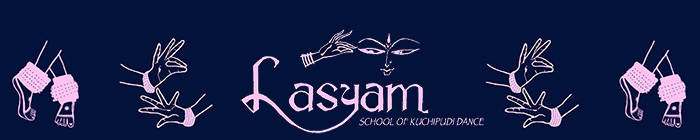
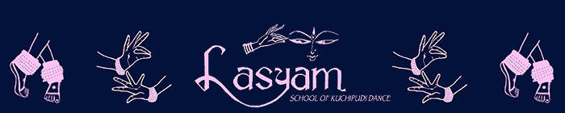

Beginnings
Kuchipudi is one of the eight major Indian classical dances. It originated in the small village of
Kuchipudi that borders the Bay of Bengal in the Krishna district of Andhra Pradesh. It was nurtured
by scholars and artists who refined the dance technique over many years. The Kuchipudi dance
technique utilizes fast, rhythmic footwork and sculptural body movements. It combines stylized mime
with hand gestures and subtle facial expressions, occassionally including dialogues spoken by the
dancers. Through this blend of performance techniques, Kuchipudi is unique among the Indian
classical dance styles. Historically, Kuchipudi was performed as a dance drama with several dancers
taking on different roles. Today however, Kuchipudi is performed as both solo or group performances.
The themes are mostly derived from Sanskrit scriptures such as the Natyashastra and other Indian
mythology. The portrayal of certain characters is a central motif of this dance form.
Kuchipudi is traditionally accompanied by Carnatic music. A typical orchestra for a Kuchipudi
recital includes the mridangam (Indian percussion), flute, and violin. A vocalist sings the lyrics,
and the nattuvanar conducts the orchestra and recites the rhythmic patterns.